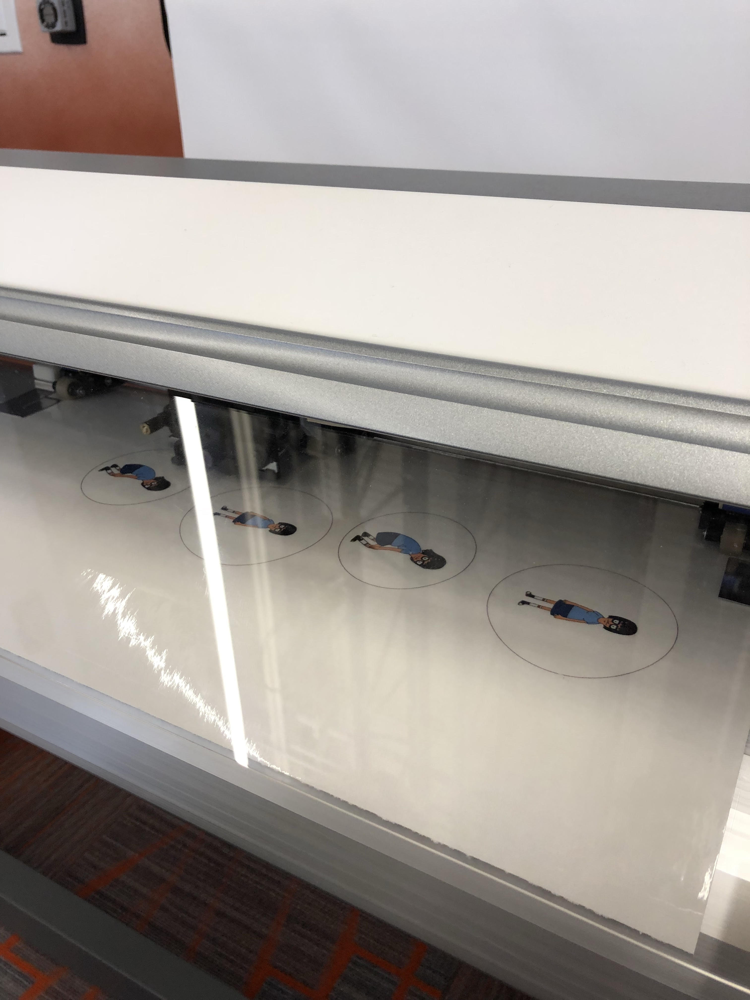
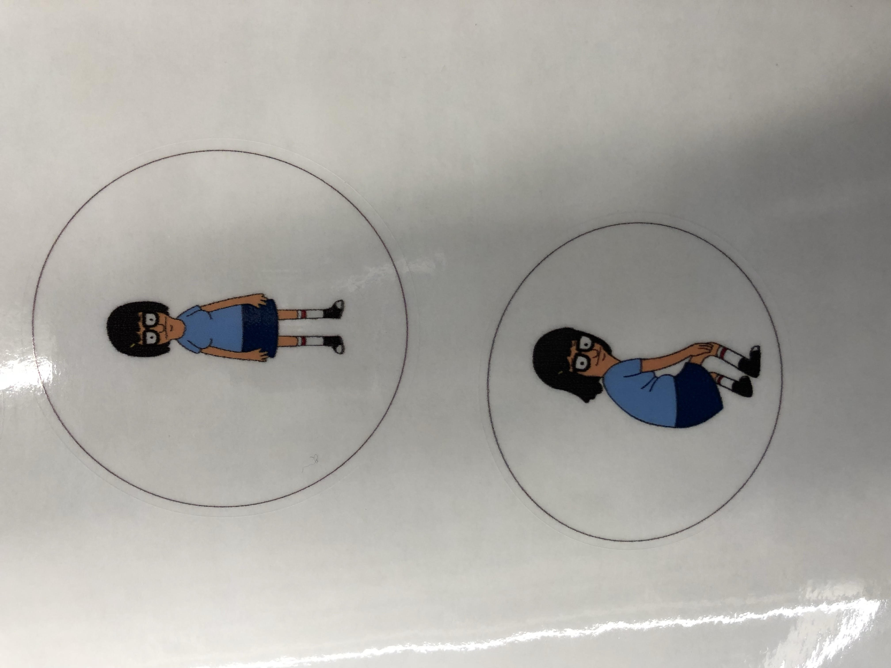
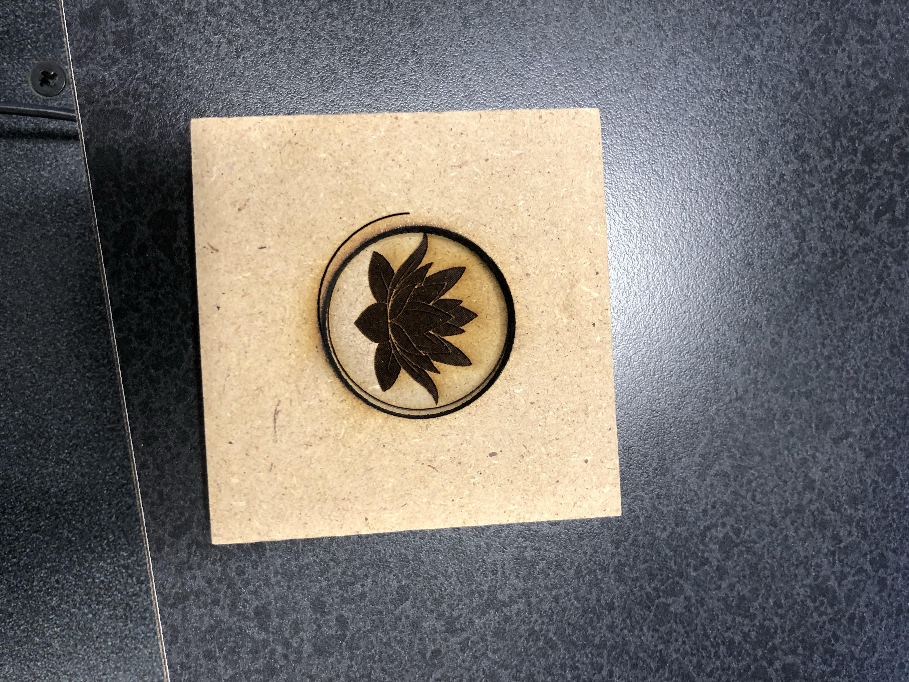
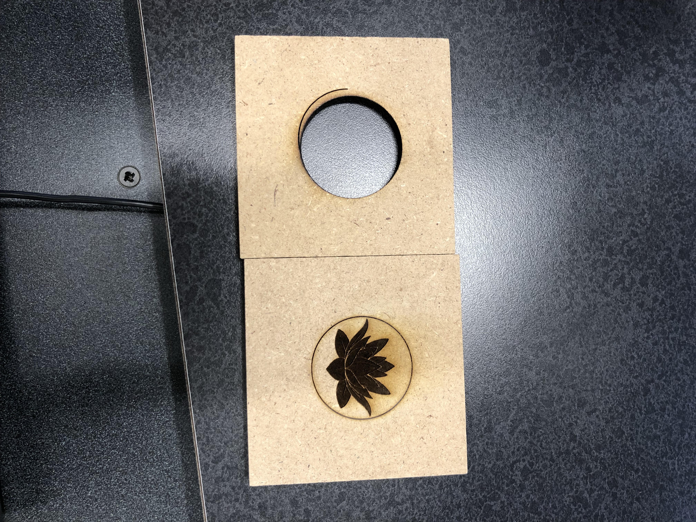

Index
Rotation 6: Vinyl, CNC Milling, Casting and Composites
Project Description:
I used the Roland GS-24 CAMM 1 to cut out two pink colory vinly stickers to decorate my notebook. I choosed to outline a cat and the M intial for my first name. I like the way it turned out! I originally had a different idea to print out a wave sticker, but since the design has way to many details, the machine was not able to cut all of the details as precisely. I instead choosed to do a simple outline of my inital and a cat so the machine can cut it out properly.


Project Description:
I used the Rolands 540i printer to create two different full color contour stickers. I decided to print out my favorite character, Tina Belcher, from the show Bob's Burger. I imported the pictures onto CorelDraw and decided to put them inside the contoured circle to make the stickers. I really liked how it turned out. Figuring out how to transfer the sticker onto the laptop was not difficult because Erin helped me out. However, the general process seemed to be very easy to grasp and I will defitnetly make more stickers in the future.


Project Description:
For the molding and casting pewter project I decided to design a lotus flower. I created the mold by having two pieces wood block with one side depeer than the other. I used the CorelDraw software for this project.


Files: